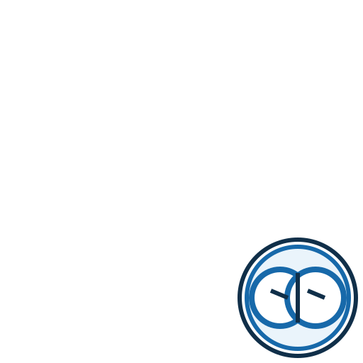
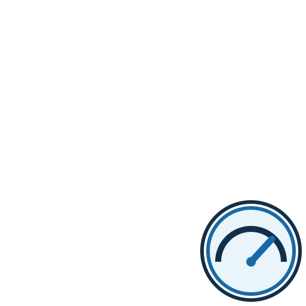
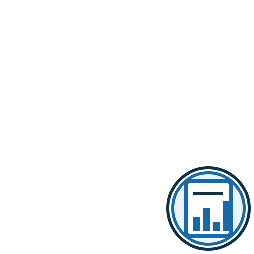
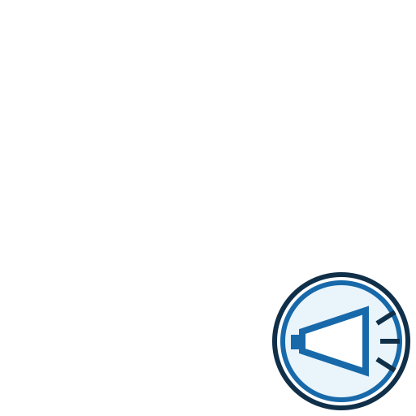
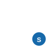

Sistema visual LEONES
El mismo león representa todo el ecosistema; el símbolo secundario identifica la función.

Prospección
Descubrir y vigilar.

Router
Recomendar.

Atlas
Conocimiento.

Hardware
Conocer la máquina.

Modelos
Identificar y gestionar modelos.

Inferencia
Medir rendimiento.

Agents / LOTB
Medir capacidad agentiva.

Evidencia
Resultados reproducibles.
Privacidad
Proteger datos.

Publicación
Compartir voluntariamente.

Manada
Conocimiento colectivo.

Stats / aprendizaje
Agregar y aprender.

Herramientas
Scripts y utilidades.

Arquitectura
Componentes del sistema.

Acerca de
Proyecto y filosofía.